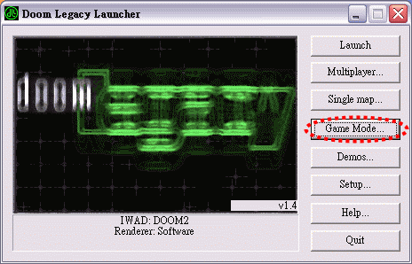
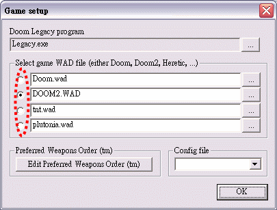
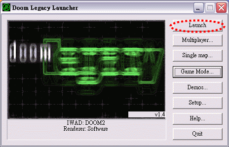
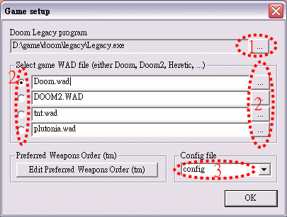
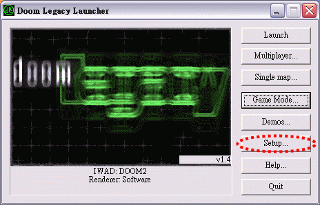
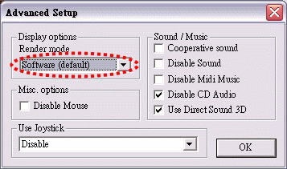
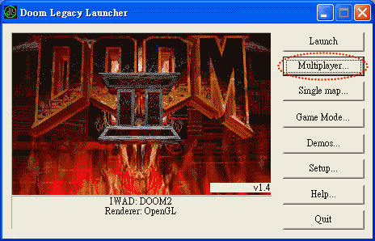
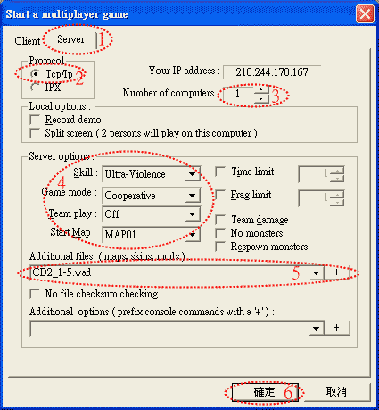
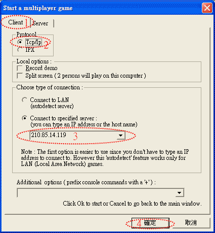

【Options】【Multiplayer 連線設定】
Doom Legacy Launcher
快速入門設定
本說明文件已經過作者 Weow 先生的同意修改並收錄於此。
最後更新日期：2006年6月14日，Last Update: 14 June 2006
※下載 Win32 DooM Legacy v1.42 ( 發佈日期2004- 04-17 )
※設定好的檔案：config.cfg (用滑鼠玩) 與 launcher.cfg (請【按此下載】...解壓縮之後的檔案放到 Legacy 目錄底下)
●按"LAUNCHER.EXE"後再進入”Game Mode..."選擇想要玩的地圖：


●按"Launch"啟動遊戲：

●設定顯示方式(如果不行玩的話再設......)
※手動設定(如果自己想設看看的話.......)：
●第一次按"LAUNCHER.EXE"啟動時的畫面設定：

1.設定"Legacy.exe"所在路徑。
2.設定四大地圖檔所在路徑和選擇想要玩的地圖。
3.設定"設定檔"名為"config"。

●進入"Setup..."後設定顯示方式：

1.Software：軟體模擬(無3D加強，跑3D加強很吃力時用)
2.3Dfx Glide：3D加強(voodoo系列)
3.OpenGL：3D加強(nVidia的3d顯示卡(TNT或GeForce系列))
4.miniGL：3D加強(voodoo系列或其它的顯示卡)
●按"Launch"啟動遊戲：
●進入遊戲後(如果下載了設定好的檔案，以下就不用設定了)......
1.按鍵"F11"四下，使亮度成為最高比較清楚
2.按鍵"ESC"切換→OPTIONS→ALWAYS RUN:ON(總是跑功能開啟)
3.OPTIONS→MOUSE OPTIONS→ALWAYS MOUSELOOK:ON(使用滑鼠描準)
4.OPTIONS→CROSSHAIR:CROSS(十字準心)、ANGLE(角準心)、POINT(點準心)
5.OPTIONS→SOUND VOLUME...→SFX VOLUME(音效大小)；MUSIC VOLUME(音樂大小)
6.OPTIONS→VIDEO OPTIONS...→3D CARD OPTIONS...→FOG...→FOG:ON(濾鏡功能開啟)
；FOG COLOR:FFFFFF(白色；變比較亮)；FOG DENSITY:100(愈大濾鏡愈強)
※外掛地圖 PWAD 部分是在 Single Map 裡設定，請參考【開 server 設定-步驟５】
※用鍵盤玩(legacy預設值)："↑"(前), "↓"(後), "←"(左), "→"(右),
"Ctrl"(開火),"Space"(開門),
"Shift"＋方向鍵(跑), "Alt"＋方向鍵(側走),
"Shift"＋"Alt"＋方向鍵(側跑),
"TAB"(地圖), "T"(傳訊息), "/"(跳), "Page Up"(向上看), "Page
Down"(向下看), "End"(視眼置中)
※用滑鼠玩(建議)："左鍵"(前), "D"(後), "S"(左), "C"(右),
"右鍵"(開火),"Space"(開門),
"TAB"(地圖), "T"(傳訊息), "Alt"(跳)
◎滑鼠按鍵設定從朋友UAC(很強)所學來的^^"
※ 攻略密技(連自遊戲基地 DOOM 討論版精華區)
※有什麼問題的話請寫信給我(Weow)^^
Multiplayer 連線教學
進入程式 Doom Legacy Lanucher 時選擇下面的 Multiplayer：

【如果是由您當 Server 請進行以下設定】：

【如果當您是 Client 請進行以下設定】：
